<title>mesokla Brandbook</title>
<meta name="claude:viewport-fit-sides" content="cover">
<link rel="preconnect" href="https://fonts.googleapis.com">
<link rel="stylesheet" href="https://fonts.googleapis.com/css2?family=Montserrat:wght@700;800;900&family=Manrope:wght@500;600;700;800&display=swap">
<style>
/* Layout: big colour blocks in the three brand colours only, chapters stacked like the reference cards: label top-left, code right. Single look by choice. */
:root{
  --leaf:#A6B8A0; --violet:#8B729C; --crimson:#E20942;
  --display:"Montserrat",system-ui,sans-serif; --text:"Manrope",system-ui,sans-serif;
  color-scheme:light;
}
*{box-sizing:border-box}
body{background:var(--leaf);color:var(--crimson);font-family:var(--text);font-size:17px;line-height:1.55;margin:0;font-weight:600}
.wrap{max-width:1180px;margin:0 auto;padding-left:max(16px,env(safe-area-inset-left,0px));padding-right:max(16px,env(safe-area-inset-right,0px))}
section{padding-block:88px}
.s-leaf{background:var(--leaf);color:var(--crimson)}
.s-violet{background:var(--violet);color:var(--leaf)}
.s-crimson{background:var(--crimson);color:var(--leaf)}
.label{font-family:var(--text);font-weight:800;font-size:13px;letter-spacing:.18em;text-transform:uppercase}
.s-leaf .label{color:var(--violet)}
h1,h2,h3{font-family:var(--display);font-weight:900;text-transform:uppercase;line-height:.95;letter-spacing:-.01em;margin:0;text-wrap:balance}
h2{font-size:clamp(40px,7vw,88px);margin:16px 0 22px}
h3{font-size:24px;margin-bottom:8px}
p{margin:0;max-width:62ch}
.lead{font-size:20px}
.grid{display:grid;gap:24px}
img,video{max-width:100%;display:block}
figure{margin:0;display:flex;flex-direction:column;gap:12px;min-width:0}
figcaption{font-size:15px}
figcaption b{font-family:var(--display);font-weight:900;text-transform:uppercase;letter-spacing:.02em}

.hero{padding-block:72px 64px}
.hero h1{font-size:clamp(72px,16vw,220px);line-height:.82;letter-spacing:-.03em}
.hero .tag{margin-top:24px;color:var(--violet);font-size:clamp(14px,2vw,22px);letter-spacing:.32em}
.hero p{margin-top:36px}

.cards{display:flex;flex-direction:column;gap:14px;margin-top:32px}
.card{border-radius:6px;padding:28px 32px;min-height:190px;display:flex;justify-content:space-between;align-items:flex-end;gap:16px;flex-wrap:wrap}
.card .n{font-family:var(--display);font-weight:900;text-transform:uppercase;font-size:clamp(30px,5vw,56px);line-height:1}
.card .r{font-size:15px;max-width:40ch;margin-top:8px}
.card .h{font-family:var(--display);font-weight:800;font-size:clamp(18px,2.4vw,26px)}
.c-leaf{background:var(--leaf);color:var(--crimson);outline:3px solid var(--violet);outline-offset:-3px}
.c-violet{background:var(--violet);color:var(--leaf)}
.c-crimson{background:var(--crimson);color:var(--leaf)}

.pairs{grid-template-columns:repeat(3,minmax(0,1fr));margin-top:28px}
.pair{border-radius:6px;padding:22px;font-family:var(--display);font-weight:900;text-transform:uppercase;font-size:32px;line-height:1}
.pair small{display:block;margin-top:12px;font-family:var(--text);font-size:12px;letter-spacing:.12em;font-weight:800}
.never{margin-top:20px;font-size:15px}

.type{grid-template-columns:1.4fr 1fr}
.tcard{border:3px solid currentColor;border-radius:6px;padding:28px;display:flex;flex-direction:column;gap:14px;min-width:0}
.tcard .spec{font-size:12px;letter-spacing:.14em;font-weight:800;text-transform:uppercase}

.shot{border-radius:6px;overflow:hidden}
.banners{grid-template-columns:repeat(2,minmax(0,1fr));margin-top:32px}
.profile{grid-template-columns:repeat(2,minmax(0,1fr));margin-top:40px}
.copy{border:3px solid currentColor;border-radius:6px;padding:20px;display:flex;flex-direction:column;gap:8px}
.copy pre{margin:0;font-family:var(--text);font-weight:600;font-size:16px;white-space:pre-wrap}

.pillars{grid-template-columns:repeat(3,minmax(0,1fr));margin-top:28px}
.pil{border-radius:6px;padding:24px;display:flex;flex-direction:column;gap:10px;min-height:200px}
.pil .label{color:inherit;opacity:.85}
.pil p{font-size:15px}

.posts{grid-template-columns:repeat(2,minmax(0,1fr));margin-top:28px}
.anim{grid-template-columns:1.4fr 1fr;gap:32px;align-items:center}

.cmds{grid-template-columns:repeat(2,minmax(0,1fr));margin-top:28px}
.cmd{border:3px solid currentColor;border-radius:6px;padding:20px;min-width:0}
.cmd p{margin-top:8px;font-size:16px}
.cmd code{display:block;margin-top:12px;font-family:ui-monospace,Menlo,monospace;font-size:12.5px;overflow-x:auto;white-space:pre}

.mothhero{display:grid;grid-template-columns:1.1fr 1fr;gap:28px;align-items:center;margin-top:28px}
.mothhero .big{background:var(--leaf);border-radius:6px;aspect-ratio:1/1;display:grid;place-items:center}
.s-leaf .mothhero .big{outline:3px solid var(--violet);outline-offset:-3px}
.mothhero .big svg{width:78%;height:auto}
.flap .wl,.flap .wr{transform-box:view-box;transform-origin:200px 210px;animation:flap 2.8s ease-in-out infinite}
@keyframes flap{0%,55%,100%{transform:scaleX(1)}70%{transform:scaleX(.22)}85%{transform:scaleX(1)}}
.tiles{display:grid;grid-template-columns:repeat(3,minmax(0,1fr));gap:14px;margin-top:28px}
.tile{border-radius:6px;aspect-ratio:1/1;display:grid;place-items:center;position:relative}
.tile img{width:72%;max-height:72%;object-fit:contain}
.tile .cap{position:absolute;left:14px;bottom:10px;font-weight:800;font-size:11px;letter-spacing:.14em;text-transform:uppercase}
.t-l{background:var(--leaf);color:var(--violet);outline:3px solid var(--violet);outline-offset:-3px}.t-v{background:var(--violet);color:var(--leaf)}.t-c{background:var(--crimson);color:var(--leaf)}
.lockup{display:flex;flex-wrap:wrap;gap:14px;margin-top:28px}
.lock{border-radius:6px;padding:22px 28px;display:flex;align-items:center;gap:14px;font-family:var(--display);font-weight:900;font-size:clamp(28px,4vw,44px);text-transform:uppercase}
.lock img{height:1.5em}
.els{display:grid;grid-template-columns:repeat(4,minmax(0,1fr));gap:14px;margin-top:28px}
.elc{border-radius:6px;overflow:hidden;display:flex;flex-direction:column}
.elc .tile{border-radius:0;aspect-ratio:4/3}
.elc .t{padding:12px 14px;font-size:14px;background:var(--crimson);color:var(--leaf)}
.elc .t b{font-family:var(--display);font-weight:900;text-transform:uppercase;display:block;font-size:16px}
.rules2{display:grid;grid-template-columns:1fr 1fr;gap:20px;margin-top:28px}
.rules2 ul{margin:8px 0 0;padding-left:20px}
@media (max-width:860px){.mothhero,.rules2{grid-template-columns:1fr}.els{grid-template-columns:repeat(2,minmax(0,1fr))}.tiles{grid-template-columns:1fr}}
@media (prefers-reduced-motion:reduce){.flap .wl,.flap .wr{animation:none}}
.vids{grid-template-columns:repeat(2,minmax(0,1fr));margin-top:24px}
@media (max-width:860px){.vids{grid-template-columns:1fr}}
footer{padding-block:40px;background:var(--crimson);color:var(--leaf)}

@media (max-width:860px){
  .banners,.profile,.posts,.cmds,.type,.anim{grid-template-columns:1fr}
  .pillars,.pairs{grid-template-columns:1fr}
}
</style>

<header class="s-leaf hero"><div class="wrap">
  <div class="label">brand book v5 · x / twitter</div>
  <h1 style="margin-top:22px">mesokla</h1>
  <p class="lead">Three colours, nothing else. Big bold uppercase type, flat colour blocks, no textures or decoration. The simplicity is the style. One line-art moth is the only illustration.</p>
</div></header>

<main>
<section class="s-violet"><div class="wrap">
  <div class="label">01 · colour</div>
  <h2>Three colours only</h2>
  <p class="lead">No white, no black. One colour is the background, the second carries the text, the third is a single highlight block.</p>
  <div class="cards">
    <div class="card c-leaf"><div><div class="n">Leaf Skin</div><div class="r">Main background for the profile and value posts.</div></div><div class="h">#A6B8A0</div></div>
    <div class="card c-violet" style="outline:3px solid var(--leaf);outline-offset:-3px"><div><div class="n">Muted Violet</div><div class="r">Threads, announcements, collabs. Highlight on leaf.</div></div><div class="h">#8B729C</div></div>
    <div class="card c-crimson"><div><div class="n">Electric Crimson</div><div class="r">Main text on leaf, hot takes, accents.</div></div><div class="h">#E20942</div></div>
  </div>
  <div class="grid pairs">
    <div class="pair c-leaf" style="outline:none">Leaf<small style="color:var(--violet)">bg leaf · text crimson · highlight violet</small></div>
    <div class="pair c-violet">Violet<small>bg violet · text leaf · highlight crimson</small></div>
    <div class="pair c-crimson">Crimson<small>bg crimson · text leaf · highlight violet</small></div>
  </div>
  <p class="never">Never: crimson text on violet or violet text on crimson, the two blend together. Text is always leaf, or sits on leaf.</p>
</div></section>

<section class="s-leaf"><div class="wrap">
  <div class="label">02 · type</div>
  <h2>Bold and uppercase</h2>
  <div class="grid type" style="margin-top:28px">
    <div class="tcard"><div class="spec" style="color:var(--violet)">Headlines · Montserrat Black 900 · caps</div><div style="font-family:var(--display);font-weight:900;font-size:clamp(44px,7vw,84px);line-height:.92;text-transform:uppercase">Hook first.<br>Then <span style="background:var(--violet);color:var(--leaf);padding:0 .12em">value</span>.</div><p style="font-size:15px">Headlines, wordmark, the main point of a post. Line height 0.92–1, no italics. One word may get a highlight block.</p></div>
    <div class="tcard"><div class="spec" style="color:var(--violet)">Small text · Manrope 600–800</div><div style="font-size:26px;font-weight:700;line-height:1.3">Post when your audience is awake.</div><div class="label" style="color:var(--violet)">Thread · 1 / 9</div><p style="font-size:15px">List items, captions, handle. Kickers in tracked caps.</p></div>
  </div>
</div></section>

<section class="s-violet"><div class="wrap">
  <div class="label">03 · the moth</div>
  <h2>Brand mark</h2>
  <p class="lead">A line-art moth with a medium stroke, one fine inner contour and a wing spot. It replaces a mascot: it lives in the signature, on the banner and in animation.</p>
  <div class="mothhero"><div class="big"><svg class="flap" aria-hidden="true" viewBox="20 40 360 320"><g stroke="#E20942" stroke-width="3.6" fill="none" stroke-linecap="round" stroke-linejoin="round"><g class="wl"><path d="M196 196C160 120 100 70 40 66C22 100 30 170 76 204C116 226 168 214 196 206Z"/><path d="M196 214C164 222 112 244 96 292C98 330 142 342 170 306C184 286 192 252 196 230Z"/><g transform="translate(196 206) scale(.7) translate(-196 -206)" stroke="#8B729C" stroke-opacity="1" stroke-width="2.57"><path d="M196 196C160 120 100 70 40 66C22 100 30 170 76 204C116 226 168 214 196 206Z"/><path d="M196 214C164 222 112 244 96 292C98 330 142 342 170 306C184 286 192 252 196 230Z"/></g><circle cx="92" cy="136" r="5.5" fill="#E20942" stroke="none"/></g><g class="wr"><g transform="translate(400 0) scale(-1 1)"><path d="M196 196C160 120 100 70 40 66C22 100 30 170 76 204C116 226 168 214 196 206Z"/><path d="M196 214C164 222 112 244 96 292C98 330 142 342 170 306C184 286 192 252 196 230Z"/><g transform="translate(196 206) scale(.7) translate(-196 -206)" stroke="#8B729C" stroke-opacity="1" stroke-width="2.57"><path d="M196 196C160 120 100 70 40 66C22 100 30 170 76 204C116 226 168 214 196 206Z"/><path d="M196 214C164 222 112 244 96 292C98 330 142 342 170 306C184 286 192 252 196 230Z"/></g><circle cx="92" cy="136" r="5.5" fill="#E20942" stroke="none"/></g></g><path d="M195 150C184 112 166 92 140 80"/><circle cx="140" cy="80" r="4.5"/><g transform="translate(400 0) scale(-1 1)"><path d="M195 150C184 112 166 92 140 80"/><circle cx="140" cy="80" r="4.5"/></g><ellipse cx="200" cy="222" rx="9" ry="56"/></g></svg></div>
    <div><h3>Three poses</h3><p><b>Front</b> for the mark, avatar and signature. <b>Flight</b> for motion in visuals and stickers. <b>Trail</b> (flight with a dotted path) for the banner and announcements.</p>
    <p style="margin-top:14px">The line colour follows the background: crimson with a violet contour on leaf, leaf on violet and crimson.</p></div></div>
  <div class="tiles"><div class="tile t-l">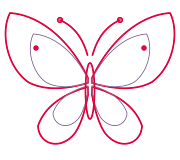<span class="cap">crimson line</span></div><div class="tile t-v">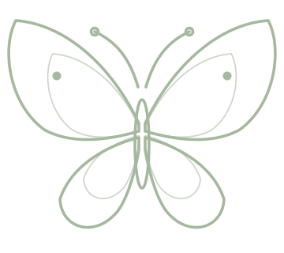<span class="cap">leaf line</span></div><div class="tile t-c"><span class="cap">leaf line</span></div></div>
  <div class="tiles"><div class="tile t-l"><span class="cap">crimson line</span></div><div class="tile t-v">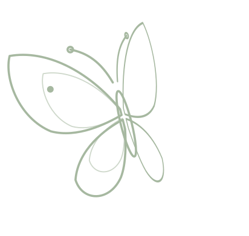<span class="cap">leaf line</span></div><div class="tile t-c"><span class="cap">leaf line</span></div></div>
  <div class="tiles"><div class="tile t-l">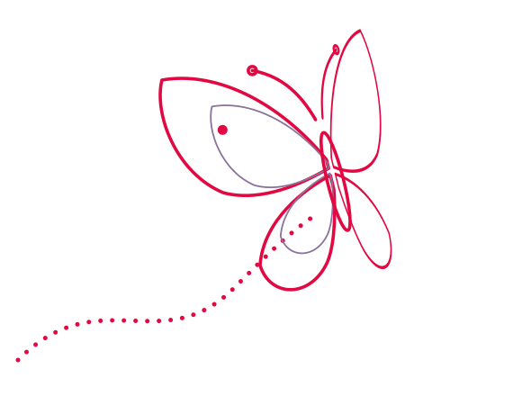<span class="cap">crimson line</span></div><div class="tile t-v">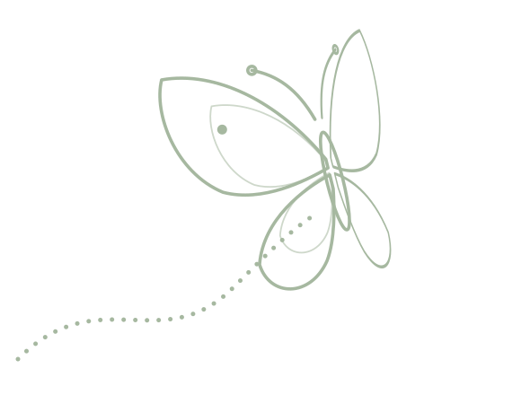<span class="cap">leaf line</span></div><div class="tile t-c"><span class="cap">leaf line</span></div></div>
  <h3 style="margin-top:44px">Signature</h3>
  <p>Moth plus MESOKLA. Added to the bottom-left corner of every post automatically.</p>
  <div class="lockup">
    <div class="lock c-leaf" style="outline:3px solid var(--violet);outline-offset:-3px">mesokla</div>
    <div class="lock c-violet">mesokla</div>
    <div class="lock c-crimson">mesokla</div>
  </div>
  <div class="rules2"><div><h3>Do</h3><ul><li>Scale it from an icon to half the frame</li><li>Animate it: wing flap, line draw-on, flight along the trail</li><li>Place it next to a headline or in an empty corner</li></ul></div>
  <div><h3>Don’t</h3><ul><li>Fill the wings with colour (that’s what the elements are for)</li><li>Change the stroke weight or add shadows</li><li>Put it over text, or use more than one per visual</li></ul></div></div>
</div></section>

<section class="s-leaf"><div class="wrap">
  <div class="label">04 · elements</div>
  <h2>Abstract elements</h2>
  <p class="lead">Eight shapes taken from the moth: wing, silhouette, contour, petal, flight trail, eyespot, curl and dots. Each comes in all three colours. Solid shapes use the third brand colour, line shapes use the text colour.</p>
  <div class="els"><div class="elc"><div class="tile t-l">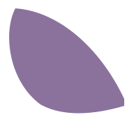</div><div class="t"><b>Wing</b>Solid forewing. Large, cropped by a corner.</div></div><div class="elc"><div class="tile t-v">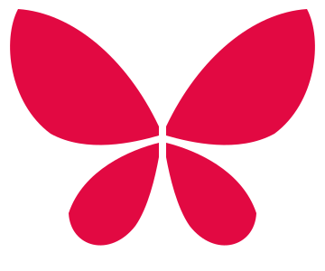</div><div class="t"><b>Silhouette</b>Four wings, no body. Mark, pattern, avatar.</div></div><div class="elc"><div class="tile t-c"></div><div class="t"><b>Contour</b>Wing echo lines. Line accent, great for draw-on.</div></div><div class="elc"><div class="tile t-l">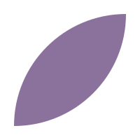</div><div class="t"><b>Petal</b>The simplest wing form. Cropped in a corner.</div></div><div class="elc"><div class="tile t-v">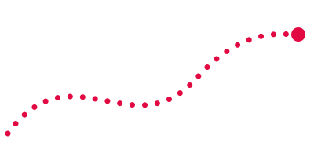</div><div class="t"><b>Trail</b>Dotted flight path. Points at text, a date, a CTA.</div></div><div class="elc"><div class="tile t-c">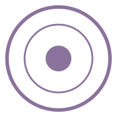</div><div class="t"><b>Eyespot</b>The wing spot. Focus, target, “the main thing”.</div></div><div class="elc"><div class="tile t-l">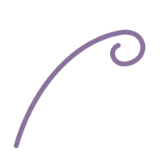</div><div class="t"><b>Curl</b>Antenna curl. Small accent next to text.</div></div><div class="elc"><div class="tile t-v"></div><div class="t"><b>Dots</b>Three wing spots. Rhythm, “more to come”.</div></div></div>
  <div class="rules2"><div><h3>Placement</h3><ul><li>One element per visual</li><li>Large and cropped by the frame edge, or small next to text</li><li>Always behind the text, never covering it</li></ul></div>
  <div><h3>Colour</h3><ul><li>On leaf: violet</li><li>On violet: crimson</li><li>On crimson: violet</li></ul></div></div>
</div></section>

<section class="s-crimson"><div class="wrap">
  <div class="label">05 · profile</div>
  <h2>Banner and profile</h2>
  <p class="lead">Four 1500×500 banners; on three of them the moth flies towards the wordmark. The bottom-left corner stays empty because the avatar covers it.</p>
  <div class="grid banners">
    <figure><figcaption><b>Leaf</b> · main</figcaption></figure>
    <figure><figcaption><b>Violet</b> · alternate</figcaption></figure>
    <figure><figcaption><b>Crimson</b> · campaign weeks</figcaption></figure>
    <figure><figcaption><b>Stripes</b> · the palette as a banner</figcaption></figure>
  </div>
  <div class="grid profile">
    <div class="copy"><div class="label">bio</div><pre>cc / web3 marketer @solus_group
dm for collab</pre></div>
    <div class="copy"><div class="label">avatar</div><pre>Your photo on a flat leaf or violet background (remove the original background in Canva), so the avatar and banner share one palette.</pre></div>
  </div>
</div></section>

<section class="s-leaf"><div class="wrap">
  <div class="label">06 · pillars</div>
  <h2>Colour = post type</h2>
  <div class="grid pillars">
    <div class="pil c-leaf"><span class="label">theme=leaf</span><h3>Value</h3><p>Tools, frameworks, checklists. Posts people save.</p></div>
    <div class="pil c-violet"><span class="label">theme=violet</span><h3>Threads &amp; collabs</h3><p>Thread covers, spaces, announcements.</p></div>
    <div class="pil c-crimson"><span class="label">theme=crimson</span><h3>Hot takes</h3><p>Opinions, fails, 2am thoughts.</p></div>
  </div>
</div></section>

<section class="s-violet"><div class="wrap">
  <div class="label">07 · post visuals</div>
  <h2>Templates</h2>
  <p class="lead">16:9 (1600×900) for the X feed and 4:5 (1080×1350) for carousels and Instagram. Every template works in all three themes.</p>
  <div class="grid posts">
    <figure><figcaption><b>quote · el=wing</b> · hot take with a wing in the corner</figcaption></figure>
    <figure><figcaption><b>quote · crimson · el=moth</b> · same template, another theme, with the moth</figcaption></figure>
    <figure>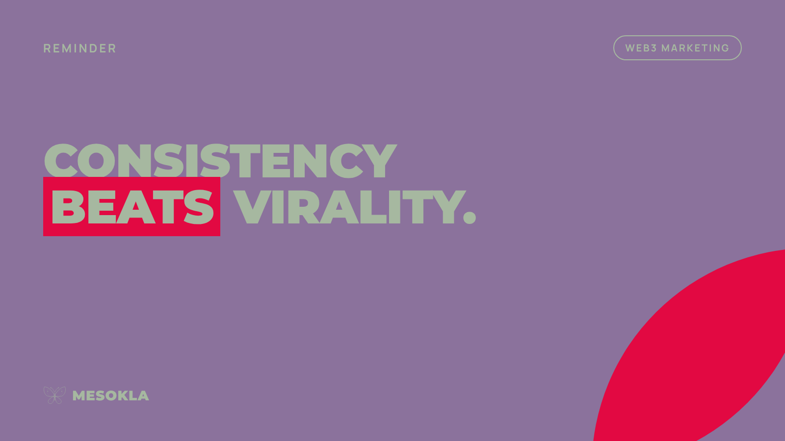<figcaption><b>quote · violet · el=lens</b> · with a petal in the corner</figcaption></figure>
    <figure>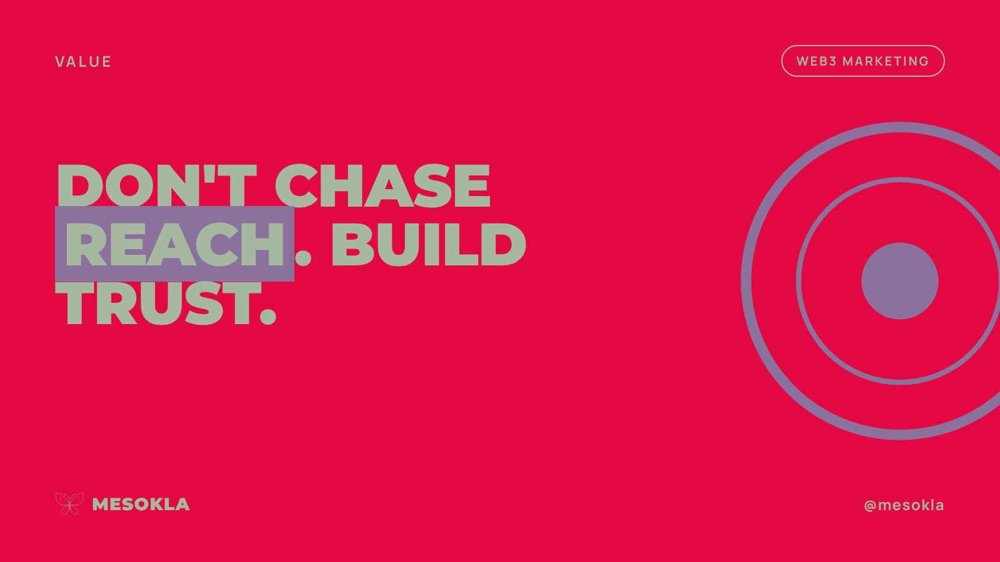<figcaption><b>quote · crimson · el=spot</b> · with an eyespot</figcaption></figure>
    <figure><figcaption><b>thread · el=contour</b> · first tweet of a thread</figcaption></figure>
    <figure>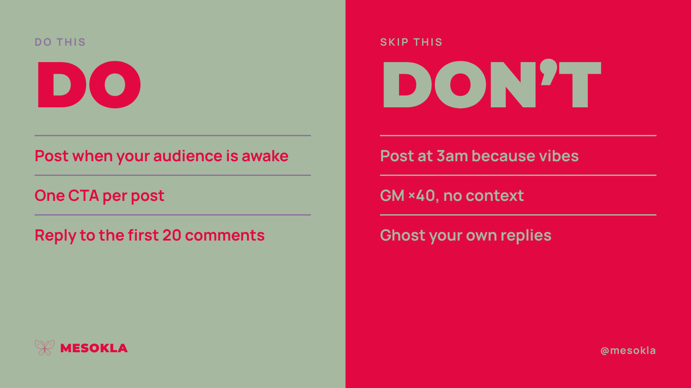<figcaption><b>do-dont</b> · how it should be vs how it goes</figcaption></figure>
    <figure><figcaption><b>list</b> · 3–6 items</figcaption></figure>
    <figure><figcaption><b>collab · el=trail</b> · collabs, spaces, events</figcaption></figure>
    <figure style="max-width:420px"><figcaption><b>stack</b> · 4:5, three bands like the reference, one idea per band</figcaption></figure>
  </div>
</div></section>

<section class="s-leaf"><div class="wrap">
  <div class="label">08 · video</div>
  <div style="margin-top:16px">
    <div><h2 style="font-size:clamp(36px,5vw,60px)">Moth intros</h2><p>Three 4.5-second scenarios, each on any of the three backgrounds. Mix them so every video opens a little differently.</p></div>
  </div>
  <div class="grid vids">
    <figure><video class="shot" src="out/intro-fly-crimson.mp4" autoplay muted loop playsinline controls aria-label="Intro: the moth flies in along a dotted trail on crimson"></video><figcaption><b>Fly · crimson</b> · the moth flies in along a dotted trail and lands above the wordmark</figcaption></figure>
    <figure><video class="shot" src="out/intro-draw-leaf.mp4" autoplay muted loop playsinline controls aria-label="Intro: the moth is drawn by a line on leaf"></video><figcaption><b>Draw · leaf</b> · the line draws the moth, it flaps and rises to the wordmark</figcaption></figure>
    <figure><video class="shot" src="out/intro-zoom-violet.mp4" autoplay muted loop playsinline controls aria-label="Intro: camera pulls back from the wing on violet"></video><figcaption><b>Zoom · violet</b> · starts inside the wing contours and pulls back to the moth</figcaption></figure>
    <figure><video class="shot" src="out/intro-fly-leaf.mp4" autoplay muted loop playsinline controls aria-label="Intro: fly scenario on leaf"></video><figcaption><b>Fly · leaf</b> · same scenario in another colour</figcaption></figure>
  </div>
</div></section>

<section class="s-crimson"><div class="wrap">
  <div class="label">09 · the skill</div>
  <h2>How to use it</h2>
  <p class="lead">The pack lives in the repository as the mesokla-brand skill. Tell Claude what you need and it builds the visual with these rules.</p>
  <div class="grid cmds">
    <div class="cmd"><div class="label">hot take</div><p>“Make a visual for a tweet about community”</p><code>node scripts/render.mjs quote out/x.png \
  "text=Your community is your *product*."</code></div>
    <div class="cmd"><div class="label">thread</div><p>“Thread cover about KOL campaigns, 7 tweets”</p><code>node scripts/render.mjs thread out/t.png \
  "title=KOL campaigns *that* work" count="1 / 7" el=contour</code></div>
    <div class="cmd"><div class="label">do / don’t</div><p>“Make a do / don’t about launches”</p><code>node scripts/render.mjs do-dont out/dd.png \
  "yes=Brief with KPIs|Mid-tier KOLs" "no=Pay for a tweet|Pray"</code></div>
    <div class="cmd"><div class="label">element or moth</div><p>Add el=wing, wings, contour, lens, trail, spot, curl, dots or moth to any post</p><code>node scripts/render.mjs quote out/q.png \
  "text=Consistency *beats* virality." theme=violet el=lens</code></div>
    <div class="cmd"><div class="label">banner and video</div><p>“Update the banner for the campaign” or “Make an intro: fly on crimson”</p><code>node scripts/render.mjs banner out/b.png theme=crimson
node scripts/video.mjs "templates/intro.html?v=fly&amp;theme=crimson" out/i.mp4 4.5</code></div>
  </div>
</div></section>
</main>
<footer><div class="wrap label">mesokla · leaf #A6B8A0 · violet #8B729C · crimson #E20942</div></footer>
